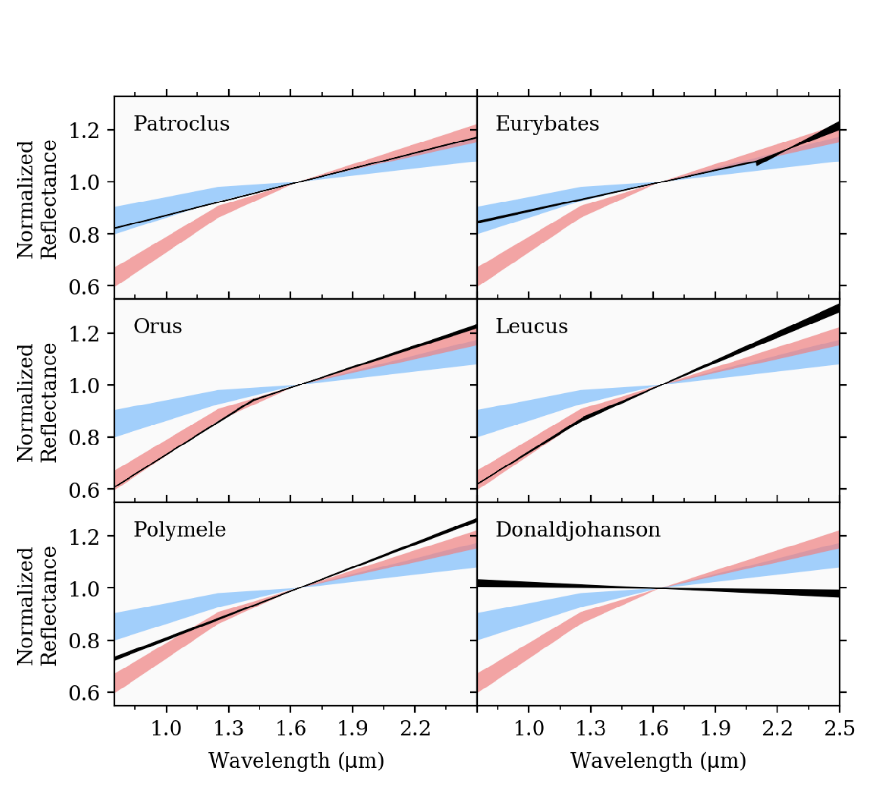

Through the NASA L'SPACE (Lucy Student Pipeline Accelerator and Competency Enabler) program, I conducted Density Functional Theory research in support of NASA's Lucy spacecraft mission to Jupiter's Trojan asteroids. Our team's proposal was selected as the top-ranked submission out of one hundred student teams. As a brief summary of my research:
- As Project Lead for Materials and Physical Sciences (Aug 2025 – Dec 2025), I designed the DFT-based materials-discovery workflow our team used to screen Pt-based and earth-abundant transition-metal electrocatalysts against the operating envelope of the Lucy mission's secondary instruments. I ran roughly 600 high-throughput ab initio calculations in VASP paired with an active-learning acquisition function on the reactive PES, narrowing the search from ~10,000 candidates to a 25-composition short list that the team carried forward.
- I measured surface binding kinetics through Tafel analysis on the candidate electrocatalysts and polymeric biomaterial coatings, computing Gibbs adsorption energies and overpotentials directly from the DFT trajectories. I trained graph-convolution interatomic potentials (CHGNet-style) on this dataset to accelerate molecular dynamics of the leading systems by ~104×, which let us simulate adsorbate-coverage equilibria that classical force fields cannot resolve.
- As Researcher in AI Robotics (May 2025 – Aug 2025), I built an autonomous-experimentation workflow that closes the loop between a robotic synthesis platform, DFT, and a deep kinetic model. I trained a reinforcement-learning policy with physics-based priors to choose the next synthesis condition, and the resulting model predicts adsorption / desorption rates and catalyst turnover under simulated aerospace operating conditions with R² > 0.9 on held-out wet-lab data.
